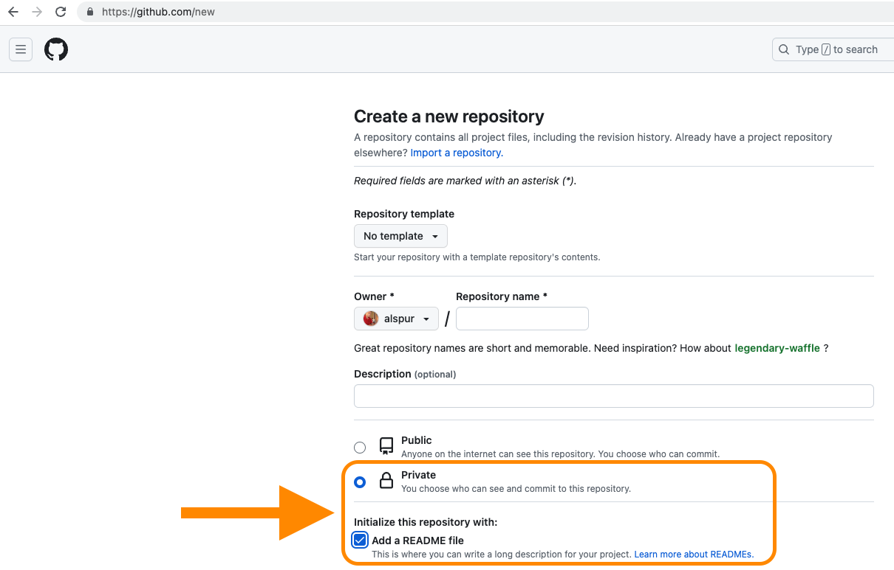

# load -----
library(tidyverse)
library(readxl)
options(scipen = 999)
# Calling in scripts from the "updated_app_data" folder then the code in
# scripts 1-13 will run!
source("updated_app_data/13_updated_2020_app_data.R") Reproducible data analysis in R
Homework review
Setting up your data processing project
You can (and should) start your projects by creating a new repo on your GitHub account

Before you start coding, set yourself up for a successful, reproducible analysis project
- Every new data analysis project should live in its own RStudio project
- Most of your projects should be started on Github, then cloned locally (just like we do with homework)
- Be sure to set your project repos to “Private” before creating them on Github!
- Also, using a
README.mdfile can help you stay organized and keep track of data sources and/or outliers.
- RStudio projects can be also created locally by navigating to
File -> New Project..., but it’s more difficult to connect it to Github if you start that way.
Remember: After you’ve created a project, use a consistent folder structure to keep your analysis organized
Building a consistent file structure in your projects will help you (and others!) easily navigate your code.
Minimally, you will want to have a separate folder for:
datascriptsfigures

Another layer of organization: Separate your raw and processed data!
- Use sub-folders within your
/datafolder to keep your raw data files separated from any processed data files you produce during your analysis. - This creates additional procedural barrier to accidentally over-writing your raw data.
- Use the
/processeddata folder for exporting clean data or results of your analysis, like summary tables.

Sourcing Scripts
You can use the source function in R to reuse functions that you create in another R script.
- The source function uses this basic syntax:
source("path/to/some/file.R")to run scripts you’ve written behind-the-scenes, giving you access to the objects created by that script. - Breaking up your data cleaning and analysis work across multiple scripts can be very helpful during complex projects.
- This approach makes it easier to isolate errors and update code.
Live coding example: U.S. Census Annual Survey of School System Finances
# 2_f33_2008_2013_clean
# 2022-10-05 last updated by Krista Kaput
# load -----
library(tidyverse)
library(readxl)
options(scipen = 999)
# source script cleaning f33 data from 2002-2007
source("f33_finance_enrollment_scripts/1_f33_2002_2007_clean.R")
# load raw f33 from 2008
f33_2008_raw <- read_excel("raw_data/f33_finance_raw/elsec08_sttables.xls",
sheet = "1", skip = 9, n_max = 53)
# load raw f33 from 2009
f33_2009_raw <- read_excel("raw_data/f33_finance_raw/elsec09_sttables.xls",
sheet = "1", skip = 9, n_max = 53)
# load raw f33 from 2010
f33_2010_raw <- read_excel("raw_data/f33_finance_raw/elsec10_sttables.xls",
sheet = "1", skip = 9, n_max = 53)
# load raw f33 from 2011
f33_2011_raw <- read_excel("raw_data/f33_finance_raw/elsec11_sttables.xls",
sheet = "1", skip = 9, n_max = 53)
# load raw f33 from 2012
f33_2012_raw <- read_excel("raw_data/f33_finance_raw/elsec12_sttables.xls",
sheet = "1", skip = 7, n_max = 53)
# load raw f33 from 2013
f33_2013_raw <- read_excel("raw_data/f33_finance_raw/elsec13_sttables.xls",
sheet = "1", skip = 7, n_max = 53)
# clean all 2008 f33 data ---------
f33_2008_all <- f33_2008_raw |>
rename(state = "...1",
total_revenue = "Total Revenue",
federal_revenue = "Federal Revenue",
state_revenue = "State Revenue",
local_revenue = "Local Revenue",
total_expenditures = "Total Expenditure",
current_expenditures = "Current Spending",
capital_expenses = "Capital Outlay") |>
mutate(year = 2008) |>
select(year, state, total_revenue, federal_revenue, state_revenue, local_revenue,
total_expenditures, current_expenditures, capital_expenses)
# filter for 2008 national f33 data
f33_2008_us <- f33_2008_all |>
filter(total_revenue == "582125621")
# filter for 2008 state f33 data
f33_2008_states <- f33_2008_all |>
filter(total_revenue != "582125621")
# clean all 2009 f33 data ---------
f33_2009_all <- f33_2009_raw |>
rename(state = "...1",
total_revenue = "Total Revenue",
federal_revenue = "Federal Revenue",
state_revenue = "State Revenue",
local_revenue = "Local Revenue",
total_expenditures = "Total Expenditure",
current_expenditures = "Current Spending",
capital_expenses = "Capital Outlay") |>
mutate(year = 2009) |>
select(year, state, total_revenue, federal_revenue, state_revenue, local_revenue,
total_expenditures, current_expenditures, capital_expenses)
# filter for 2009 national f33 data
f33_2009_us <- f33_2009_all |>
filter(total_revenue == "590947579")
# filter for 2009 state f33 data
f33_2009_states <- f33_2009_all |>
filter(total_revenue != "590947579")
# clean all 2010 f33 data ------------
f33_2010_all <- f33_2010_raw |>
rename(state = "...1",
total_revenue = "Total Revenue",
federal_revenue = "Federal Revenue",
state_revenue = "State Revenue",
local_revenue = "Local Revenue",
total_expenditures = "Total Expenditure",
current_expenditures = "Current Spending",
capital_expenses = "Capital Outlay") |>
mutate(year = 2010) |>
select(year, state, total_revenue, federal_revenue, state_revenue, local_revenue,
total_expenditures, current_expenditures, capital_expenses)
# filter for 2010 national f33 data
f33_2010_us <- f33_2010_all |>
filter(total_revenue == "592895329")
# filter for 2010 state f33 data
f33_2010_states <- f33_2010_all |>
filter(total_revenue != "592895329")
# clean all 2011 f33 data ------------
f33_2011_all <- f33_2011_raw |>
rename(state = "...1",
total_revenue = "Total Revenue",
federal_revenue = "Federal Revenue",
state_revenue = "State Revenue",
local_revenue = "Local Revenue",
total_expenditures = "Total Expenditures",
current_expenditures = "Current Spending",
capital_expenses = "Capital Outlay") |>
mutate(year = 2011) |>
select(year, state, total_revenue, federal_revenue, state_revenue, local_revenue,
total_expenditures, current_expenditures, capital_expenses)What is R Markdown?
R Markdown is a special file type that allows you to combine code with plain text to create reports
YAML Header: Controls certain output settings that apply to the entire document.
Code Chunk: Includes code to run, and code-related options.
Body Text: For communicating results and findings to the targeted audience.
Code to Generate a Table: Outputs a table with minimal formatting like you would see in the console.
Section Header: Specified with
##.Code to Generate a Plot: Outputs a plot. Here, the code used to generate the plot will not be included because the parameter
echo=FALSEis specified.

R Markdown combines “chunks” of R code with blocks of Markdown-formatted text
R code chunks in R Markdown are contained within a pair of triple backticks that include a curly brace that indicates the section contains r code:
```{r}
<code goes here>
```
Markdown is a *really* easy way to format text. For more, visit Markdown Guide).
For more on using R Markdown documents, check out RStudio’s resources here.

LIVE CODING EXAMPLE: Kentucky EdBuild Data Analysis

What is Quarto?
Quarto is a multi-language, next generation version of R Markdown from RStudio
- Like R Markdown, Quarto is free and open source
- Quarto also uses Knitr to execute R code, so it can render most existing Rmd files without modification
- Use a single source document to target multiple formats (HTML, PDF, Word, etc.)
- It’s language-agnostic. It can render documents that contain code written in R, Python, Julia, or Observable.
- Check out the gallery of Quarto examples

How to use Quarto: Rendering
Use the Render button to render the file and preview the output with a single click or keyboard shortcut (⇧⌘K)
You can also automatically render whenever you save. To do that you check the Render on Save option on the editor toolbar. The preview will update whenever you re-render the document. Side-by-side preview works for both HTML and PDF outputs.
When rendering, Quarto generates a new file that contains selected text, code, and results from the .qmd file. The new file can be an HTML, PDF, MS Word document, presentation, website, book, interactive document, or other format.

How to use Quarto: Authoring

LIVE CODING EXAMPLE: Kentucky EdBuild Data Analysis

Homework
This week’s homework assignment
Reading assignment
Coding task
- Continue working on your
week04assignment! - If you’ve completed a join of your first two datasets, add in the rest of the data you’ll need to model your state’s current funding formula
- Two blocks of office hours will be available this week on Thursday and Friday to help with any data joining and/or cleaning challenges
Finance contact
- Please share the contact information for your organization’s finance/operations lead by Friday, July 14. We will be contacting them next week regarding the grant funding we have available.